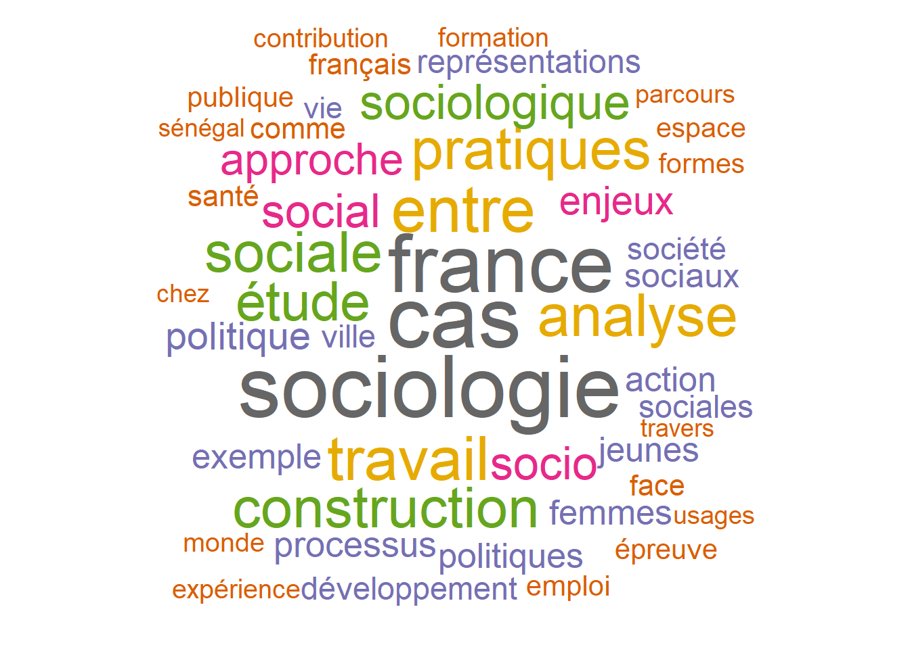

Travail sur un corpus de donnée portant sur l’évolution des titres de thèses en sociologie en France de 2000-2020
Author
Hugues Arnasalon
Published
January 8, 2023
1 Rendu Analyse Textuelle : L’évolution des titres de thèses en sociologie en France de 2000-2020
1.1 Description des données
Pour permettre l’analyse de l’évolution des titres de thèses, les données utilisées ont été collectées sur le site de theses.fr, plateforme de recherche des doctorats français gérée par l’Agence Bibliographique de l’Enseignement Supérieur (ABES). Le but de cette base de données était de constituer un inventaire national exhaustif de toutes les thèses de doctorat soutenues en France depuis 1985, indépendamment de la discipline concernée. La base de données comprenait 429 404 individus associés à 172 variables.”
Note
Plus d’informations à propos de la base de donnée ici.
Les méthodes de la statistique textuelle sont particulièrement adaptées à l’analyse de textes tels qu’ils ont été rédigés ou collectés, sans altération de leur contenu. Dans le cadre de cette étude, nous utiliserons ces méthodes pour analyser les titres de thèses en sociologie et tenter de comprendre le sens des mots et la structure des phrases qui les composent. La statistique textuelle permet d’objectiver et de synthétiser ces informations de manière à établir une représentation commune et diversifiée à la fois (Garnier, 2010).
1.2 Construction de la base de donnée
Pour répondre à notre problématique de recherche, qui sera présentée ultérieurement, nous avons sélectionné cinq variables parmi celles proposées par la base de données : le prénom de l’auteur de la thèse, le prénom du directeur de thèse, le prénom du président de jury de la thèse, la date de soutenance et le titre de la thèse en français. Étant donné que les thèses ont été soutenues dans plusieurs universités sur l’ensemble du territoire, nous nous sommes intéressés à savoir s’il existe une différence entre les universités de la région Île-de-France et les autres universités. Pour ce faire, nous avons référencé toutes les universités de la région Île-de-France et regroupé les autres universités dans une sous-base de données.
Important
Il est aussi important de noter que certaines grandes écoles ont étés rajoutées à la liste : EHESS ; ENS ; Sciencepo ; EPHE ; Agro paris tech ; Ecole des mines
En conséquence, nous avons créé deux bases de données. La première regroupe l’ensemble des thèses soutenues dans les universités de la région Île-de-France, soit 1336 observations, et la deuxième comprend toutes les thèses soutenues dans une université en dehors de cette région, soit 1497 observations. Il convient de souligner que les titres de thèses sont courts et n’ont pas besoin d’être découpés. En outre, il est à noter que la base de données concerne uniquement les thèses soutenues au cours des vingt dernières années, c’est-à-dire entre 2000 et 2020 et que la discipline retenue est la sociologie.
Code
b <-read_csv('https://raw.githubusercontent.com/hugues114/M2_Analyse-textuelle/main/base.csv') %>%drop_na()head(b)
# A tibble: 6 × 6
...1 auteurs.0.prenom date_soutenance directeurs_these.0.pr…¹ presi…² titre…³
<dbl> <chr> <date> <chr> <chr> <chr>
1 5 Imaine 2016-01-01 Philippe Carole L'évol…
2 6 Cyprien 2015-01-01 Luc Florent Les in…
3 10 Séverine 2016-01-01 Bénédicte Michel Collec…
4 11 Giovanni 2019-12-16 Laurent Marco Transf…
5 13 Fong-Ming 2016-01-01 Claude Jocelyn Accomm…
6 14 Shao-Fen 2019-06-18 Bénédicte Olivier Enquêt…
# … with abbreviated variable names ¹directeurs_these.0.prenom,
# ²president_jury.prenom, ³titres.fr
Danger
Dans cette table, les valeurs manquantes ont étés retirées afin de pouvoir donner un apperçu du jeu de donnée construit.
L’analyse textuelle descriptive, qui utilise à la fois un nuage de mots, un graphe de mots et un dictionnaire, permet de répondre à la question suivante : Quels sont les thèmes de thèses les plus fréquemment soumis en sociologie pendant la période considérée en Île-de-France et ailleurs, et que nous apprennent ces titres ? Le premier de ces outils permet de mettre en évidence les occurrences les plus fréquentes dans le corpus, tandis que le second nous permet de dégager les co-occurrences (analyse de similarité) pour approfondir notre analyse.
2 Analyse du corpus et résultats obtenus
Le lexique est l’ensemble des mots présents dans un corpus, il peut être affiché soit par ordre alphabétique ou par ordre de fréquence décroissante d’apparition des mots. La lecture du lexique est importante afin de comprendre le corpus et repérer la présence et la fréquence des mots utilisés, rechercher un mot spécifique et sa fréquence d’apparition, et comparer la fréquence de différents mots. Dans un premier temps, la base de thèses soutenues hors universités IDF sera analysée. Voici un aperçu du lexique complet, sans inclure les mots outils ni les chiffres :
Code
corpus_autre <-import_corpus("https://raw.githubusercontent.com/hugues114/M2_Analyse-textuelle/main/baseAUTRE.csv", format ="csv", textcolumn =6, language="fr")# création du tableau lexicaltb_autre <-build_dtm (corpus_autre, remove_stopwords = T) ##on garde les mots valisestb_autre
<<DocumentTermMatrix (documents: 1497, terms: 4694)>>
Non-/sparse entries: 13996/7012922
Sparsity : 100%
Maximal term length: 23
Weighting : term frequency (tf)
Le résultat nous indique que la matrice de termes de documents comprend 1497 documents et 4694 termes différents, que le nombre de valeurs non nulles (non-sparse) est de 13996, et le nombre de valeurs nulles (sparse) est de 7012922. La matrice est très creuse, avec un pourcentage très élevé de valeurs nulles, cela peut être le résultat de la présence de nombreux termes uniques dans les documents, ce qui entraîne une faible co-occurrence de termes dans les documents. Aussi,le terme le plus long dans la matrice a une longueur de 23 caractères.
Code
#dicodic <-dictionary(tb_autre, remove_stopwords = T)head(frequent_terms(tb_autre), 20) # les 20 termes les plus fréquents
Global occ. Global %
cas 153 1.0708287
sociologie 153 1.0708287
france 142 0.9938410
entre 106 0.7418813
travail 101 0.7068869
analyse 97 0.6788914
pratiques 96 0.6718925
construction 93 0.6508959
sociale 93 0.6508959
étude 88 0.6159015
sociologique 77 0.5389138
social 72 0.5039194
socio 71 0.4969205
approche 67 0.4689250
enjeux 58 0.4059351
politique 56 0.3919373
processus 51 0.3569429
politiques 49 0.3429451
action 48 0.3359462
exemple 48 0.3359462
On se rend compte que dans les 20 termes les plus fréquents dans les titres de thèses soutenues hors IDF, le terme ‘travail’ apparaît 101 fois, on peut donc émettre l’hypothèse que plusieurs des thèses traitent de la pratique du travail ou d’une sociologie du travail.
X1
La crise de l'école élémentaire en Afrique de l'ouest francophone et les conditions de formation, de recrutement et de travail des enseignants : analyse des cas du Bénin, du Burkina Faso et du Togo
X19
Les rapports sociaux de sexe comme déterminant de la santé des femmes au travail : le cas empirique du "care" aux personnes âgées
X27
Permanence et transformations d'une institution de prévention : la médecine du travail : de l'évaluation de l'aptitude à celle des risques professionnels
X33
Identités, ethnicités, au travail : le cas de l'hôtellerie de luxe en Malaisie
X81
Deux "petits métiers" au coeur de la ville : éboueur, balayeur. Comment supporter le "sale travail" ?
X119
Usages d’Internet et implication dans le travail scolaire : approche ethnographique et quantitative d’étudiants de licence
X140
Le service social du travail : des professionnelles en quête de légitimité
X143
Groupes professionnels, politiques et établissements : l'influence et le travail des couches moyennes sur le système éducatif français : monographies menées dans l'Académie de Lille
X197
Logiques familiales et logiques scolaires : le travail scolaire des enfants à Dakar au Sénégal
X198
Santé ou travail ? : les expériences sociales de la santé et de la précarisation du travail
X225
L'ère du travail virtuel : l'éducation spécialisée comme vecteur de la virtualisation du travail : l'exemple du bassin de l'emploi de Cherbourg
X232
Les inspecteurs du travail à l'épreuve de l'évaluation des risques : une profession sous tension
X244
Le travail d'évaluation : l'inspection des professeurs de l'enseignement secondaire
X303
Les pratiques sédatives en unités de soins palliatifs, entre travail du care et négociation
X319
Etre architecte : les vertus de l'indétermination : de la sociologie d'une profession à la sociologie du travail professionnel
X325
Evolution des systèmes productifs et intérim cadre-professions intermédiaires : enjeux et stratégies des acteurs face à de nouvelles pratiques de travail et d'emploi
X341
Les mondes sociaux du "travail citoyen" : sociologie comparative de la pratique benevole en france et aux etats-unis
X350
Émotions et rituel dans le travail des pompes funèbres : contribution à la sociologie des émotions
X352
Management et expérience du travail : enquête dans trois grandes entreprises
X360
Grundschullehrer et professeurs des écoles au travail : construction des relations professionnelles
X379
L'aménagement-réduction du temps de travail et l'inflexion des politiques d'emploi en France à l'aune des régulations d'entreprise et de l'organisation temporelle du travail : quelle dynamique des modes d'emploi ?
X388
Les assistants sociaux au travail : la construction d'une sociologie du travail au quotidien
X398
Les rapports professionnels - usagers dans le travail social au Daghestan et en France. Perspectives sociologiques et pédagogiques
X404
Le souci d’autrui en miettes – Capitalisme émotionnel et division du travail humanitaire depuis Lyon, Pékin et Bamako
X422
Les usages sociaux des groupes de travail au Sénégal : facteurs d'égalisation des chances à l'école
X451
Des cadres dans une société en mutation : une tentative pour comprendre le rapport au travail des cadres
X463
Une approche sociologique de la robustesse organisationnelle : le cas du travail des réparateurs sur un grand réseau de télécommunication
X479
Le travail public régional : le cas du fonds régional d'innovation pour l'emploi
X526
Habiter le transnational : politiques de l'espace, travail globalisé et subjectivités entre Java, Kuala Lumpur et Singapour
X545
Projet managérial de professionnalisation et processus de socialisation au travail : une sociologie des conseillers financiers de La Poste
X582
Chercheurs, sourds et langage des signes : le travail d'un objet et de repères linguistiques : en France du 17e au 21e siècle
X586
Les métamorphoses du travail et les nouvelles vulnérabilités sociales au Brésil
X601
Publicités et travail marchand : la manipulation des documents publicitaires sur le marché des télécommunications
X678
Les jeunes diplômés chinois à l’épreuve de la précarité. Mobilités, accès à l’emploi et rapport au travail. Le cas des jeunes migrants qualifiés dans les villages-urbains à Pékin
X679
Regroupées mais employées : L'accès au travail des femmes marocaines en Sardaigne et en Toscane
X725
Générations de classes moyennes et travail de gentrification : changement social et changement urbain dans le Bas Montreuil et à la Croix-Rousse, 1975-2005
X730
Le travail d'encadrement dans les établissements pénitentiaires : l'intelligence de la règle
X736
La fin d'un patronage d'Etat : Consentement et conflit au travail : Le cas des facteurs de la Poste dans les Bouches-du-Rhône
X750
La construction sociale du marché du travail des ingénieurs diplômés : la formation comme dispositif de médiation marchande
X751
Transformations organisationnelles et devenir du rapport au travail : monographie du centre de tri postal de Nantes-Orvault
X757
Le Travailleur social comme passeur : procès anthropologiques et pratiques du travail social
X758
L'expérience de la précarité au travail chez les acteurs industriels au Sénégal : le cas de la SOCOCIM et des ICS
X800
Le travail relationnel au cœur de l’expérience du cancer : mises en forme ordinaires et institutionnelles de cette épreuve
X811
Les pratiques d'évaluation du travail d'enseignement
X829
Le travail, la production, l'emploi : généalogie compréhensive des dimensions anthropologique, économique et sociale du travail : étude appliquée au cas français
X836
Singularisations de genre différenciées : une approche intersectionnelle de la conversion dans le travail social
X837
Les effets des collecticiels sur les relations sociales au travail : le cas libanais
X853
Le travail de qualification : signes officiels de qualité et référence territoriale
X859
Raccourcissement du séjour hospitalier après la naissance d’un enfant à Roubaix : vécu des femmes, travail domestique et pratiques de soins à domicile
X884
Une approche sociologique du travail associatif dans les quartiers dits sensibles : de l'expérience à l'expertise
X894
Le travail des déchets : regards croisés sur une activité industrielle et environnementale
X904
Socio-histoire de l'Inspection du travail : une administration comme une autre ?
X914
Les formateurs en travail social : une professionnalisation impossible
X921
Division du travail dans l'institution policière : ethnographie d'un commissariat de Sécurité publique
X930
Valorisation du travail et travail de valorisation : le mythe de l’entrepreneuriat de soi dans l’hôtellerie de chaîne
X1004
Le travail marchand dans la grande distribution alimentaire : la définition des relations marchandes
X1024
La reproduction de la division sexuelle du travail à travers les pratiques culturelles : images de femmes dans les émissions de télévision turques et leur lecture dans le pays d'origine et dans l'immigration
X1027
L'Emotion entre organisation du travail et travail d'organisation : analyse sociologique du service de l'action sociale d'une collectivité territoriale
X1050
Articuler assistance médicale à la procréation (AMP) et vie professionnelle : le travail invisible des femmes
X1064
Le travail de planification
X1077
Connaissance des accidents du travail et parcours accidentés : regard sociologique sur les angles morts d'une question de santé publique
X1085
Les étudiants de médecine et de sociologie à l'étude : matrices disciplinaires, nature des savoirs, et pratiques intellectuelles : une analyse sociologique comparée des logiques sociales et cognitives du travail étudiant
X1116
Les plates-formes pour la recherche en nanotechnologies : politiques scientifiques et pratiques de laboratoire à l'épreuve de l'organisation du travail expérimental
X1119
Libéralisation du marché de l'énergie, réorganisation du travail et mobilisation collective dans l'entreprise : le cas de Gaz de Bordeaux
X1122
Techniques de l'information et de la communication et risques psychosociaux sur le poste de travail tertiaire.
X1132
Émergence de l’idée démocratique en situation de travail : l’expérimentation des associations ouvrières de 1848 à 1851
X1135
Le « travail du sexe ». Genèses et usages d'une catégorie politique
X1138
Organiser le maintien à domicile des personnes âgées dépendantes : une comparaison du travail des professionnels en France et en Corée
X1156
La régulation sociale du risque émotionnel dans le travail : une étude comparative dans les pompes funèbres, à l'hôpital et dans la police
X1162
Le marché du travail Rhône-Alpes/Piémont, un marché concret
X1165
L'action en force et les forces en action : sociologie de la force au travail
X1177
Le corps et l'interaction soignant-soigné : le travail émotionnel des soignants à l'hôpital
X1179
La construction de la performance sociale : étude sociologique sur les formes contemporaines de l'adaptation au monde du travail
X1205
Les parents d'élèves et le monde social à l'école : conflis et coopération autour de la division du travail de socialisation de l'enfant
X1219
La construction d'un patrimoine industriel dans le Nord-Pas-de-Calais : du travail de mémoire au développement local
X1247
Travail global et production d’un individu servile : activités économiques et migrations de travailleurs non arabes au Liban
X1275
En quête de travail, enjeux de reconnaissance et remaniement identitaire : approche comparée France-Bulgarie de carrières professionnelles de réfugiés
X1289
Les paradoxes de la flexibilité du temps de travail en Pologne
X1294
La délocalisation en action : une analyse des pratiques situées du travail en centres d'appels
X1308
De l'épuisement du corps à l'affaissement de soi : effets des transformations des freins et des contrepoids au travail sur la vie des individus
X1312
La santé des artisans au fil du parcours professionnel : de l'acharnement au travail au souci de soi
X1330
Quand les rapports sociaux de classes prennent corps : catégorisations et expériences des « cancers du travail » en Lorraine
X1340
Produire les usagers : analyse du travail quotidien des professionnels de la mobilité
X1371
Profession féministe : sociologie du travail salarié au sein des associations féministes
X1385
De la prescription du travail à l'activité : l'exemple du travail de conseiller à l'emploi à l'Anpe
X1425
La négociation collective d'entreprise : négociation du travail et travail de négociation
X1431
La mise à l'épreuve d'une profession : le travail de redéfinition du métier d'éleveur charolais
X1443
La question sociologique du stress chez les routiers de zone longue : l’enjeu de la lutte sociale comme remise en cause du pouvoir au travail
X1455
Le patient acteur dans la prise en charge du cancer : attentes normatives et travail du malade
X1486
Prévenir pour gouverner ? La prévention des risques professionnels au prisme de la santé au travail
X1491
L'émancipation par la coopération au travail : une analyse critique des Sociétés coopératives et participatives (Scop)
X1495
Changer le travail ou changer la société ? : Les hackers entre conformation à l’ordre social et volonté d’innover
Ce tableau de résultats d’analyse de cooccurrences de mots dans un texte inclut plusieurs colonnes de données, qui sont les suivantes :
% Term/Cooc. : Pourcentage de la fréquence d'un mot par rapport à sa fréquence de cooccurrence avec les autres mots.
% Cooc./Term : Pourcentage de la fréquence de cooccurrence d'un mot par rapport à sa fréquence totale dans le texte.
Global % Cooc. : Pourcentage de la fréquence de cooccurrence d'un mot par rapport à la fréquence totale de cooccurrence de tous les mots dans le texte.
Global : Nombre total de cooccurrences de tous les mots dans le texte.
t value : Valeur t statistique pour chaque mot.
Prob. : Probabilité associée à la valeur t, indiquant la significativité de la cooccurrence du mot dans le texte.
Le tableau présente une liste de mots classés par ordre décroissant de fréquence de cooccurrence dans le texte. Pour chaque mot, les données indiquent sa fréquence relative et sa significativité statistique en tant que cooccurrence dans le texte. Par exemple, pour le mot “politiques”, le pourcentage de sa fréquence par rapport à sa fréquence de cooccurrence est de 9,22%, sa fréquence de cooccurrence par rapport à sa fréquence totale est de 100% et sa fréquence de cooccurrence par rapport à la fréquence totale de cooccurrence de tous les mots dans le texte est de 0,34%. La valeur t associée à ce mot est de 49 et la probabilité associée est de 0,0000, indiquant que la cooccurrence de ce mot dans le texte est très significative.
Le recours au nuage de mots permet de visualiser de manière efficace et attrayante les termes les plus fréquents ou pertinents dans l’ensemble des titres de thèses soutenues hors du département île de France. En effet, cette technique constitue une solution pratique pour extraire et présenter de manière synthétique les informations pertinentes contenues dans ce corpus.
Warning in wordcloud::wordcloud(terms, freqs, max.words = n, random.order =
FALSE, : professionnelle could not be fit on page. It will not be plotted.
Warning in wordcloud::wordcloud(terms, freqs, max.words = n, random.order =
FALSE, : enseignement could not be fit on page. It will not be plotted.
Warning in wordcloud::wordcloud(terms, freqs, max.words = n, random.order =
FALSE, : professionnelles could not be fit on page. It will not be plotted.

Ce wordcloud représente les mots les plus fréquemment utilisés, on peut voir que les mots les plus visibles sont “cas”, “sociologie” et “france”, ce qui indique qu’ils sont très présents dans les textes. D’autres mots importants incluent “travail”, “analyse” et “pratiques”, qui sont liés à l’étude de la société et de ses structures et processus. On peut également voir que les mots “construction”, “sociale” et “sociologique” sont fréquemment utilisés, suggérant que l’approche de ces textes est axée sur la façon dont la société et ses institutions sont construites et maintenues. Enfin, on peut remarquer que les mots “enjeux”, “politique” et “politiques” apparaissent souvent, indiquant que la politique et les questions de pouvoir sont également des thèmes importants dans ces textes.
Lorsqu’on répète le même résultat pour la base de donnée avec les thèses soutenues par les universités d’IDF, on peut constater ceci :
Code
corpus2 <-import_corpus("https://raw.githubusercontent.com/hugues114/M2_Analyse-textuelle/main/IDF.csv", format ="csv", textcolumn =6, language="fr")# création du tableau lexicaltb_idf <-build_dtm (corpus2, remove_stopwords = T) ##on garde les mots valisestb_idf
<<DocumentTermMatrix (documents: 1336, terms: 4309)>>
Non-/sparse entries: 12578/5744246
Sparsity : 100%
Maximal term length: 25
Weighting : term frequency (tf)
Note
Analyse tableau lexicale : La matrice DocumentTermMatrix contient 1336 documents et 4309 termes. Il y a 12578 entrées non nulles sur un total de 5744246 entrées, ce qui représente une sparsity (ou densité) de 100%. La longueur maximale d’un terme est de 25 caractères, et le poids de chaque terme est basé sur sa fréquence d’apparition (tf : term frequency).
Code
#dicoIDFdic_idf <-dictionary(tb_idf, remove_stopwords = T)head(frequent_terms(tb_idf), 20) # les 20 termes les plus fréquents
Global occ. Global %
france 199 1.5496029
cas 137 1.0668120
sociologie 122 0.9500078
entre 112 0.8721383
travail 106 0.8254166
analyse 88 0.6852515
étude 86 0.6696776
sociale 84 0.6541037
politique 75 0.5840212
pratiques 70 0.5450864
politiques 61 0.4750039
construction 57 0.4438561
social 55 0.4282822
sociales 55 0.4282822
socio 50 0.3893475
femmes 47 0.3659866
jeunes 47 0.3659866
sociologique 47 0.3659866
action 42 0.3270519
épreuve 38 0.2959041
Analyse des termes le plus fréquents : Il ressort de l’analyse des 20 termes les plus fréquents dans les titres de thèses soutenues hors de la région Île-de-France que le terme travail apparaît fréquemment, avec un total de 106 occurrences. Cela laisse supposer que de nombreuses thèses portent sur la pratique du travail ou sur une sociologie du travail. Toutefois, il convient de noter que les résultats de cette analyse sont similaires à ceux obtenus pour les thèses soutenues en Île-de-France, à ceci près que cette dernière catégorie comprend en outre les termes femmes et jeunes parmi les plus fréquents avec 47 occurences. Il semblerait donc que les thèses soutenues en Île-de-France traitent davantage de sujets liés aux femmes et aux jeunes.
Code
concordances(corpus2, tb_idf, "femmes")
X85
Les stratégies et initiatives des femmes dans le secteur de la microfinance : Le cas du Sénégal
X104
Les pouvoirs domestiques entre dissimulation et affirmation : une comparaison entre des femmes marocaines « d’ici et de là-bas »
X121
Dérégulation du temps de travail et recompositions du marché du travail : inégalités entre les sexes, disparités entre femmes : trois figures du salariat féminin du secteur tertiaire
X127
Les femmes algériennes et le sport : l'accession des femmes algériennes au métier de Conseiller en Sport
X172
Des femmes au monde des hommes : la construction de l'identité des femmes investies dans un sport "masculin" : analyse comparée du football, des boxes poings-pieds et de l'haltérophilie
X175
L'avenir inégal : trajectoires de femmes et d’hommes après un licenciement collectif
X180
Le statut du territoire dans les rapports au travail des femmes en milieu rural : vers une typologie des modes d’habiter par l’analyse des rapports des individus à leurs lieux
X194
Domestiques, concierges et prostituées : migration et mobilité sociale des femmes immigrées espagnoles à Paris, équatoriennes et colombiennes en Espagne
X206
Le parcours matrimonial des femmes à Dakar : subir le mariage, s'approprier le divorce
X224
Les femmes indiennes au Chiapas (Mexique) : un mouvement féministe postcolonial : Tzome Ixuk : étude de cas d'une coopérative de femmes tojolabales
X247
Artistes mais femmes : formation, carrière et réputation dans l'art contemporain
X481
Le processus de conquête de l'individualisme : les femmes espagnoles dans le passage de la première à la seconde modernité
X555
La "genderisation" des politiques sociales au Mexique (1989-2005), images des femmes dans le progresa et dynamique locale d'un "rancho" à l'ouest du Mexique
X623
Les effets du statut d'activité des femmes sur les pratiques culturelles maternelles et sur les loisirs des enfants
X627
De l'encadrement à la dimension du genre : la place des femmes à la SNCF, une construction en devenir
X645
= Femmes chefs de famille monoparentale entre l'autonomie et la dépendance : une étude comparative entre le Brésil, la France et le Japon
X655
Les femmes d'Aden, de la visibilité à l'invisibilité : une étude intergénérationnelle, de la période "socialiste" au Yémen unifié
X739
Port du voile : représentations et pratiques du corps chez les femmes tunisiennes
X745
Les voies de l’autonomisation des femmes en zone rurale : modes d’organisation et d’action pour l’accès au marché dans la province du Ningxia, Chine
X760
Le devenir des jeunes femmes engagées volontaires dans la guerre du Vietnam
X767
La sexualité en prison de femmes
X777
Femmes et profession comptable au Maroc
X831
La déviance des femmes : délinquantes et mauvaises mères : entre prison, justice et travail social
X840
Différence de traitement et traitements différientiels : les trajectoires de soins des femmes "africaines" en maternité publique
X1013
La cause des femmes dans l’État : une comparaison France-Québec (1965-2007)
X1043
Interventions en milieu rural et perspectives de changement social au Niger : actions et réactions des femmes
X1054
Femmes en armes, une place introuvable ? : le cas de la féminisation de l'armée française
X1100
La question de la virginité chez les jeunes femmes issues de parents maghrébins en France
X1114
Le temps des femmes et des hommes : un point de vue reliant le travail et le hors travail, dans le contexte de la RTT
X1115
L'articulation des rapports sociaux de sexe, de classe et de race dans la migration et le travail des femmes haïtiennes
X1125
Grossesse et reconnaissance du sujet. Parcours de soins de femmes enceintes primo-arrivantes en France.
X1126
Ethnographie d'un réseau amical de femmes maghrébines des classes populaires en France
X1135
Le passage à la citoyenneté. Analyse comparée des politiques d’intégration des femmes migrantes en France et en Finlande
X1165
Sociologie des féministes des années 1970 : analyse localisée, incidences biographiques et transmission familiale d’un engagement pour la cause des femmes en France
X1177
De l’invisibilité des cancers d’origine professionnelle à l’invisibilisation des risques cancérogènes dans le travail des femmes
X1178
Genre et conflit armé : la trajectoire des femmes combattantes du conflit armé interne péruvien [1980-2000] et leur réintégration à la société civile comme éléments d'interprétation de la réconciliati
X1185
Du "care" à l' "agency" : l'engagement associatif des femmes d'Afrique subsaharienne dans la lutte contre le VIH/sida en France
X1198
Les rapports sociaux de sexe et leur (dé)matérialisation : Retour sur le corpus revendicatif de La marche mondiale des femmes de 2000
X1201
Les identités des femmes cadres en Tunisie : représentations du travail et rapports sociaux de sexes dans la vie professionnelle et familiale
X1220
Les femmes chefs de ménage au Cameroun : entre vulnérabilité et ébranlement de la domination masculine : le cas de l'extrême nord
X1246
L'esprit d'entreprise des femmes congolaises : le cas de l'alimentation, de l'habillement et des soins du corps
X1247
Pratiques motrices, femmes et cultures : l'exemple des étudiantes de culture arabo-musulmane en faculté d'éducation physique et sportive, en France et en Tunisie
X1270
La contraception d'urgence : analyse sociologiqe des pratiques contraceptives de jeunes femmes
X1327
Comprendre l'engagement politique des femmes au Gabon
Parmi les réponses contenant le mot “femmes”, ce mot représente 10% des occurrences et 100% des réponses qui contiennent “femmes” contiennent aussi “chefs”.
Code
concordances(corpus2, tb_idf, "jeunes")
X11
Les recompositions culturelles chez les jeunes issus de l'immigration dans une cité H. L. M.
X101
Lien de parenté, formes de sociabilité, pratiques téléphoniques : rôles et places du téléphone dans les modes de vie des "vieux" et des "jeunes"
X103
Les stratégies organisationnelles de la mise en oeuvre d'une politique publique d'emploi pour les jeunes
X116
Comment devenir "je"dans un monde qui vous met hors-jeu ? : Le défi de la construction d'un individu - sujet chez les jeunes du Bel-Air (Port au Prince, Haïti) de 1986 à 2006
X119
Politiques sociales et accès aux droits : les jeunes en institutions correctionnelles dans la Province de Córdoba
X187
Les usages du contrat emploi-jeune dans les associations : les premiers pas professionnels des jeunes au coeur des mutations contemporaines
X227
Mobilité sociale et mobilité internationale d’étudiants étrangers : trajectoires de jeunes professionnels chiliens et colombiens à Paris, New York et Boston
X291
Les jeunes à l'épreuve des emplois de médiation sociale
X399
La place des familles dans la formation des bandes de jeunes
X471
L'« esquive » du politique des jeunes français et sa relation avec le conformisme dans la sphère privée (étude empirique)
X504
Processus de ghettoïsation et mode de socialisation : les "jeunes de la cité"
X505
La métamorphose ultra-orthodoxe des jeunes juifs du Maroc : l'influence lituanienne du début du XXe siècle jusqu'à l'apparition du phènomène Chass en Israe͏̈l
X543
Le processus de construction identitaire des jeunes espagnols et français : du domicile familial à la vie de couple
X550
L'état face au social : la (re)définition des frontières de l'Etat-providence en Suède : une analyse des politiques de prise en charge des personnes âgées dépendantes et des jeunes enfants de 1930 à 2005
X571
Les nouvelles migrations de travail intra-européennes : jeunes Polonais et Roumains au Royaume-Uni et en Espagne
X604
Parcours scolaire et trajectoires non conformes, quelle part pour l’effet-établissement ? : Une étude de parcours jeunes de 16 à 25 ans dans des établissements traditionnels et alternatifs
X613
Amours sous silence : la socialisation amoureuse des jeunes de milieux populaires
X625
Heranzas ou la création d'une école de cirque pour, avec et par les enfants et les jeunes de Cali, Colombie : une histoire d'héritages, d'inventions et d'errances
X630
Jeunes du centre, jeunes de la périphérie : discours contre la violence : études de cas : banlieues en France et camp de réfugiés palestiniens au Liban
X684
Des lycéens sans histoires : école et famille du point de vue des jeunes dans une banlieue parisienne
X693
Dispositifs d'insertion professionnelle et socialisation dans une société insulaire en construction : le cas des jeunes chômeurs de la Mission Locale de la Cabesterre en Martinique
X723
La marche de l'inquiétude : de jeunes Chiliens à Paris
X742
Les jeunes filles « soutien de famille » à Yaoundé : analyse sociologique d’un phénomène répandu mais invisible
X760
Le devenir des jeunes femmes engagées volontaires dans la guerre du Vietnam
X832
Jeunes Bretons ou "l'identité enchanteresse" ?
X843
Jeunes issus de l'immigration et Islam : famille, école, travail et identifications religieuses
X870
Transitions postscolaires et inégalité sociale à Lima : poursuite éducative et insertion professionnelle des jeunes de la génération «Ochentas»
X883
Identités et trajectoires subjectives des jeunes pauvres en Argentine
X885
Le potentiel d'employabilité des jeunes adultes handicapés en Campanie : négociation entre obstacles et ressources
X919
Une jeunesse ouvrière : sédimentation des identités sociales de jeunes ouvriers de la maintenance des trains à la RATP
X951
Le jeu et les enjeux de l'engagement associatif et syndical des jeunes au Gabon : étude entre expérimentations et constructions identitaires des étudiants de l'université Omar Bongo de Libreville (1972 à 2006)
X960
Les jeunes Camerounais et le sida : sociologie d'une non-protection face à la maladie
X972
La sociabilité amicale nocturne comme espace de construction identitaire : étude comparative de jeunes adultes vivant à Stockholm et à Paris
X995
Assignation collective et socialisation d'attente : le cas des harkis et des jeunes de cités
X1022
La marchandisation de l'engagement des jeunes : les "dérives" du service civique à la Ligue de l'enseignement
X1037
Constitution et traitement d'une population : les jeunes en difficulté d'insertion : l'exemple de deux bassins d'emploi de l'ouest (1975-2000)
X1074
L’insécurité personnelle des jeunes dans les transports en commun franciliens : une étude dispositionnelle du sentiment d’insécurité
X1100
La question de la virginité chez les jeunes femmes issues de parents maghrébins en France
X1145
Engagement des jeunes de l’AKP : la trajectoire de l’islam politique en Turquie
X1157
De l'idée au projet : les parcours des créateurs d'entreprise jeunes et seniors
X1180
La sociologie clinique du rap : la symbolisation dans la construction des jeunes rappeurs brésiliens et français dans leurs espaces de vie
X1227
Représentations et manifestations citoyennes des jeunes issus de l'immigration : le cas des jeunes résidant dans le bassin genevois
X1270
La contraception d'urgence : analyse sociologiqe des pratiques contraceptives de jeunes femmes
X1280
Le processus de la socialisation des jeunes issus de l'immigration turque en France : état des lieux, analyse et perspectives
X1308
Un quotidien ébranlé : des jeunes patients de la psychiatrie et leur famille, dans la France contemporaine
Pour le terme “jeunes” : - Le terme “jeunes” apparaît dans 100% des documents où il cooccure avec un autre terme. - Dans 100% des documents où “jeunes” apparaît, il cooccure avec un autre terme - “Jeunes” apparaît dans 36.598661% de l’ensemble des documents - La valeur de t pour “jeunes” est de 47, ce qui signifie que sa fréquence d’apparition est significativement différente de celle d’autres termes - La probabilité associée à cette valeur de t est de 0, ce qui indique que la différence de fréquence d’apparition de “jeunes” par rapport aux autres termes est très significative.
Le wordcloud présente les termes les plus fréquents ou pertinents dans un corpus de textes sur la sociologie en France. On peut constater que les mots “france”, “cas” et “sociologie” sont les plus représentatifs, tandis que les termes “entre”, “travail” et “analyse” sont également présents avec une fréquence significative et sont liés à l’analyse des structures et processus sociaux. Les termes “étude”, “sociale” et “sociologique” sont également fréquemment utilisés, indiquant une focalisation sur l’analyse de la société et de ses phénomènes. En outre, les mots “femmes”, “jeunes” et “sociologique” sont présents avec une fréquence notable, témoignant de l’intérêt pour ces groupes de population et cette discipline dans ces textes. Enfin, bien que présents avec une fréquence relativement faible, les termes “action” et “épreuve” pourraient être considérés comme des mots clés dans certains contextes.
3 Comparaisons nuage de mots
En comparant ces deux nuages de mots, nous pouvons nous interroger sur la différenciation spatiale de la recherche en France et sur le rôle des facteurs institutionnels et territoriaux dans la production de thèses et de recherche académique. Ces facteurs peuvent inclure des éléments tels que la qualité des établissements de recherche et d’enseignement supérieur, le niveau de financement et de soutien à la recherche, la présence de centres de recherche de renom, la densité de la population, la présence de grandes entreprises et de centres de recherche, l’accessibilité des réseaux de transport, etc. Par exemple, une région avec une forte concentration d’établissements de recherche de qualité et de centres de recherche de renom pourrait être plus attractive pour les chercheurs et les doctorants, ce qui pourrait se traduire par une production de thèses et de recherche plus importante dans cette région. Elle peut alors se traduire en production de thèses